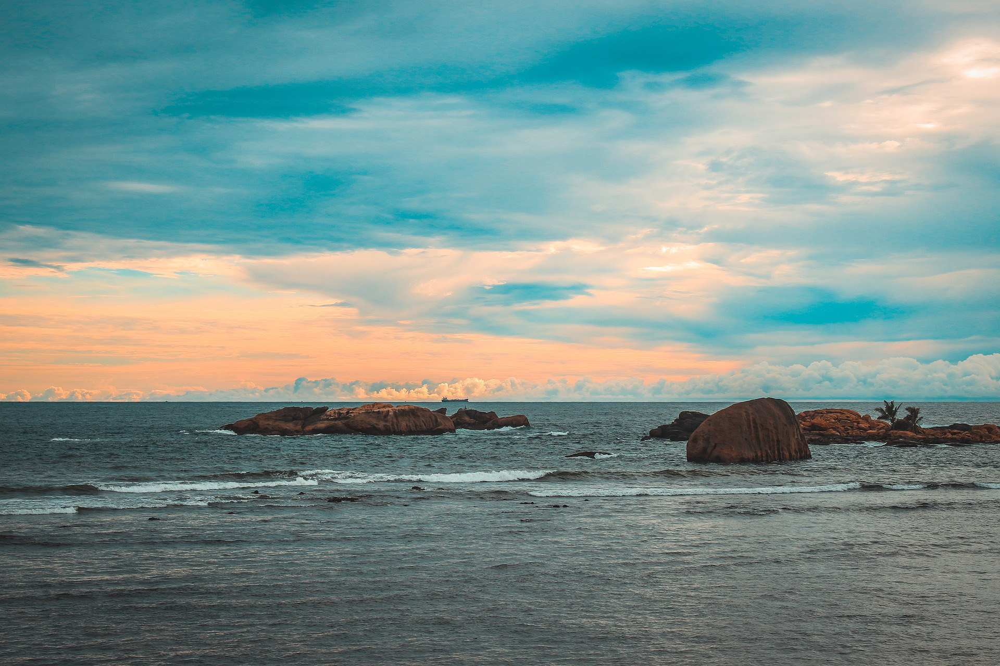

Top Srilankan Beaches
Nilaveli

Nilaveli Beach is a wide, sandy beach with palm trees and fishing boats dotted about. It's a 30-minute drive from the city of Trincomalee in the northeastern portion of Sri Lanka. Due to its own small reef, this tiny island features tranquil beaches with modest waves.
Despite its size, Nilaveli's beach is popular with both locals and tourists.
Lifeguards are on duty, and there are numerous little restaurants along the beach.
The majority of them specialize in seafood.
The Anilana Nilaveli sits right on Nilaveli Beach
Kalkudah

This mile-long beach on Pasikuda Bay is perfect for swimming and wading.
The surf is mild and protected by a reef, unlike many other beaches in Sri Lanka.
Because the water is so shallow, you can walk out hundreds of yards into the ocean.
Coconut trees line the beach, and the sand is dazzling white and smooth with fine grains. There is still a lot of undeveloped beach to explore because this location is only now being discovered for luxury resort construction.
This is the place to go if you're seeking for a tranquil getaway right on the water's edge. Karpaha Sands
Arugam Bay

With glittering white sand and deep blue ocean that gradually turns green as you get closer to the shore, Arugam Bay is a sight to behold.
Because of its beauty, the beach is known around the world as a surf destination, including some of Sri Lanka's best surf breaks.
The hotel is right on the beach in Arugam Bay.
The Spice trail is a cool, little luxury resort with individual villa accommodations